Python 3.14, Numba, and JAX for statistical computing, without changing the answer.
Wenxin Jiang, Jian Yin | Biostatistics, CityU HK
for r in range(R): labels_r = rng.permutation(labels) null[r] = group_difference(X, labels_r) p_values = (abs(null) >= abs(t_obs)).mean(axis=0)
X is n samples × p features. Every one of R shuffles touches all of X.
A faster version that changes the statistic gives you a wrong answer sooner.
Real data has no answer key. Simulated data does.
Assign each point to its nearest centre, move the centres, repeat.
Each iteration depends on the last. Cost per iteration: N × K × d distances.
Shuffle labels, recompute a statistic for every feature, repeat.
Shuffles are independent. Cost: R × n × p, huge when p is large.
Check the method, check the code, then time it.
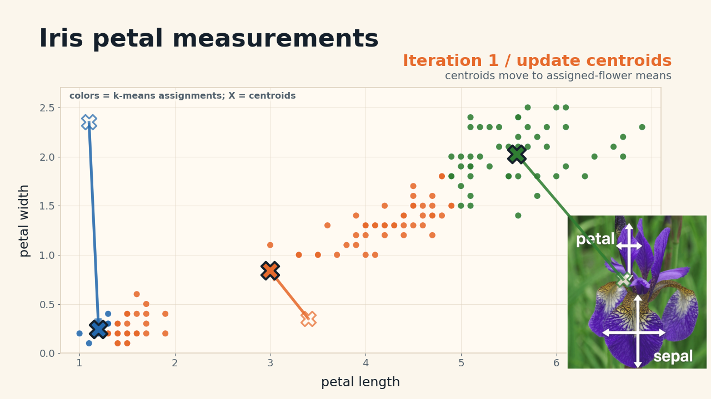
Step 2 is the hotspot, and each iteration needs the previous one.
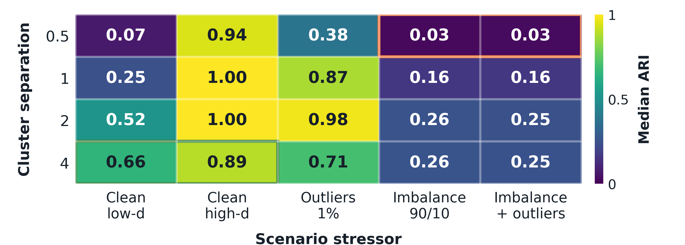
Median adjusted Rand index (ARI) against simulated truth: 1 is perfect recovery, 0 is chance. MacBook Air simulation grid.
Largest inertia difference
3.1e-14
Tolerance was 1e-8. Labels agree exactly (ARI vs reference = 1.0).
Validated rows
3,840
All passing rows of the MacBook grid; 480 memory-risk rows skipped.
Turn distances into a matrix multiply.
x2 = (X**2).sum(1)[:, None] c2 = (C**2).sum(1)[None, :] d2 = x2 + c2 - 2 * (X @ C.T) labels = d2.argmin(axis=1)
Wins when d and K are large enough for BLAS to shine.
Keep the loops, compile them.
@njit(parallel=True) def assign(X, C, labels): for i in prange(len(X)): best = np.inf for k in range(len(C)): d = sqdist(X[i], C[k]) if d < best: best = d labels[i] = k
Wins when the work is many small loops; no N × K temporary.
Same algebra, compiled for a GPU.
@jax.jit def assign(X, C): x2 = (X**2).sum(1)[:, None] c2 = (C**2).sum(1)[None, :] d2 = x2 + c2 - 2 * (X @ C.T) return d2.argmin(axis=1)
Wins when there is enough regular work to pay for transfer.
N = 100k, d = 10, K = 5
All under half a second. Not worth optimizing.
N = 1M, d = 256, K = 50
NumPy + BLAS wins. The GPU does not.
N = 5M, d = 64, K = 20
A100 is 2.8× faster than the best CPU.
Warm median runtime, validated rows only. CPU: Linux server. GPU: NVIDIA A100, transfer included, compile excluded.
Rewrite the math, prove it's the same test, then scale it.
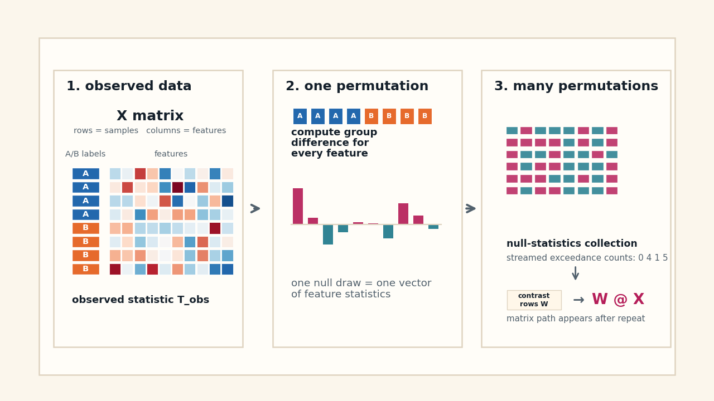
Work grows as R × n × p.
for r in range(R): null[r] = group_diff(X, perms[r])
Stores an R × p null matrix.
for W in contrast_batches(perms): T = W @ X # batch × p counts += abs(T) >= abs(t_obs)
Keeps only p running counts.
A difference in group means is a weighted sum: weight +1/nA for group A, −1/nB for group B. Stack one weight row per shuffle into W (batch × n). Then W @ X gives every statistic for the batch, and BLAS or a GPU does the work.
W @ X.PASS
450 rows pass · 0 fail · 45 skipped because the reference would run out of memory
Statistics differ only by floating-point rounding. Because counts are compared to the same threshold, p-values match exactly.
Green band: binomial variation for a single feature, not a confidence interval for the mean.
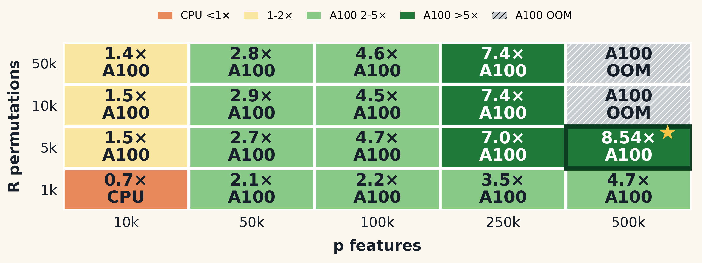
Speedup = server CPU matrix time ÷ A100 streamed time, n = 5,000, both end to end. Transfer included, JIT compile excluded. Best cell: 10.7 s → 1.25 s.
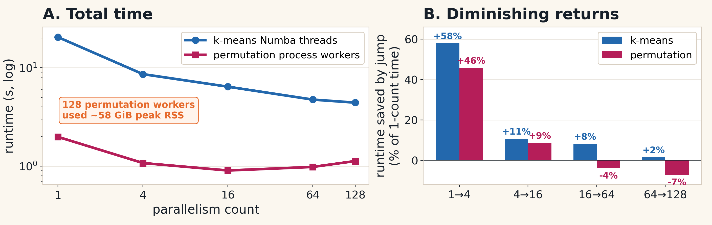
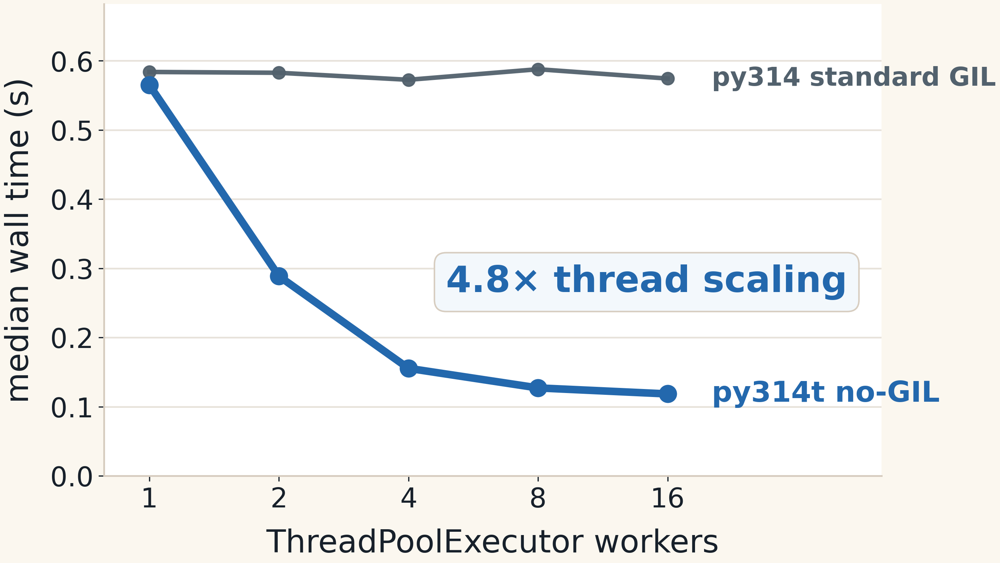
Pure-Python, CPU-bound resampling over shared in-memory data. Your speedup depends on how much of your work runs as Python bytecode.
Numba
Compiles loops, no large temporaries.
Here: k-means shape-stress on a laptop, 0.10 s vs 0.25 s median.
NumPy + BLAS
Rewrite the math as matrix products.
Here: k-means at d = 256, 32 s vs 65 s.
Threads on 3.14t
Processes work too, but copy memory.
Here: 4.77× on 16 threads, 32% less memory.
JAX on a GPU
Only once work outweighs transfer.
Here: permutation at p = 500k, 8.5×.
Every row assumes the equivalence and calibration checks already passed.
Generating code got cheap. Trusting it still costs a reference and a test.
Simulate to get an answer key, and keep a slow reference.
Check equivalence and calibration before you time anything.
Measure the bottleneck, then pick the smallest tool that fixes it.
Slides, code, raw CSVs, and figure scripts:
github.com/LucaJiang/FastStatisticalModels4Python
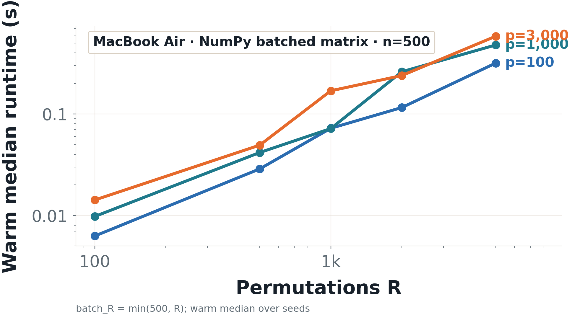
MacBook Air, NumPy batched matrix path, n = 500, warm median.
Why three environments?
Equivalence. Calibration. Local shape.
Shape scaling. Memory sweeps.
Break-even evidence. Streamed reduction.
Detailed metrics in repository.
Code. Inference. Runtime shape.
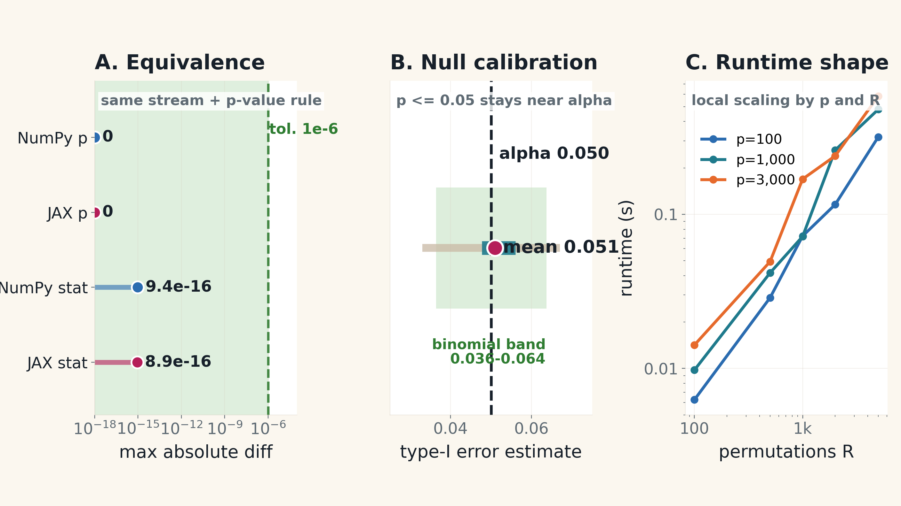
Question: When does Numba win?
Local tier: MacBook runs.
Answer: When explicit loops dominate.
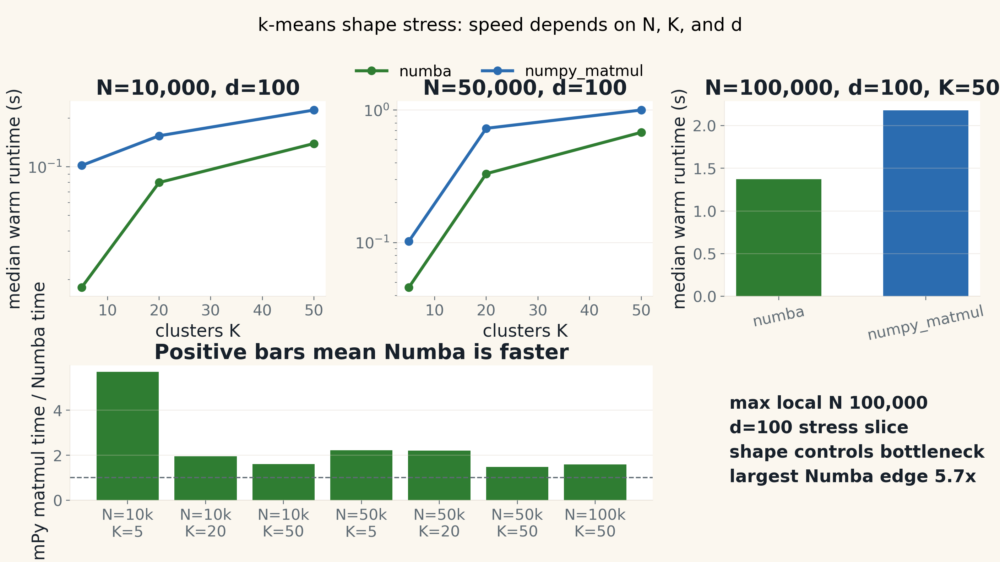
Do we detect strong signals?
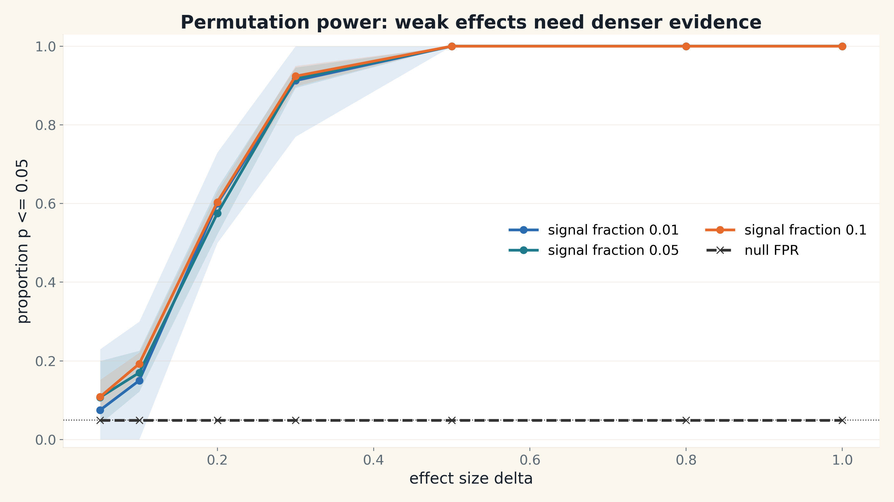
Larger batches amortized overhead; 8192 was fastest only within this measured grid.
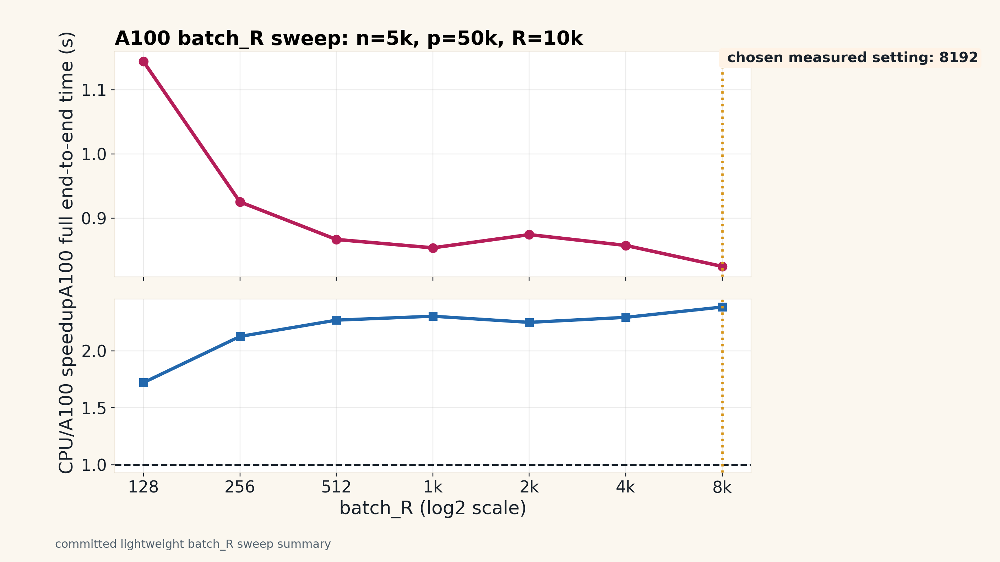
Timing improved most at small batch_R; after 512-1024 the curve mostly flattened. 8192 is the fastest accepted value measured here.
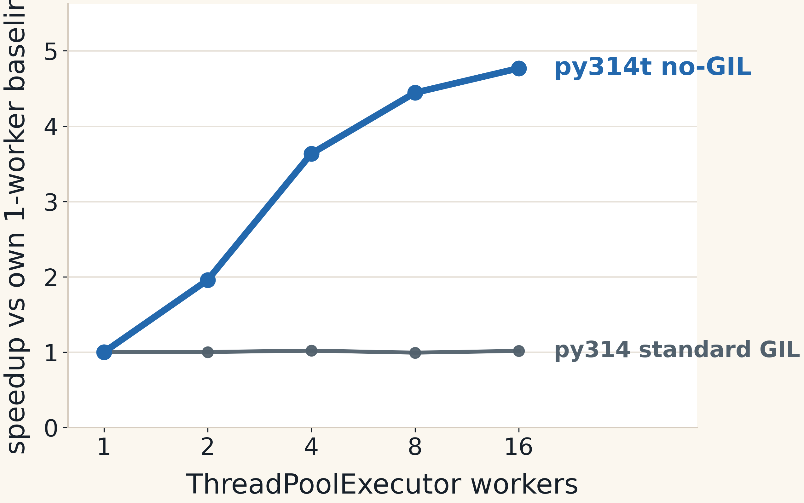
Compare scaling, not base speed.
| Build | 1 worker | 16 workers | Ratio |
|---|---|---|---|
| py314 standard GIL | 0.584s | 0.574s | 1.02× |
| CPython 3.14t free-threaded | 0.565s | 0.119s | 4.77× |
CPython 3.14 answers the standard-GIL baseline; CPython 3.14t answers the free-threaded execution-model question.
ThreadPool shares dataset.